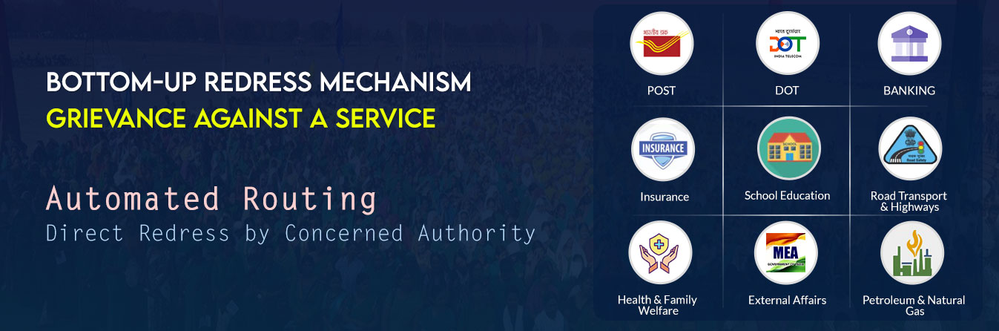
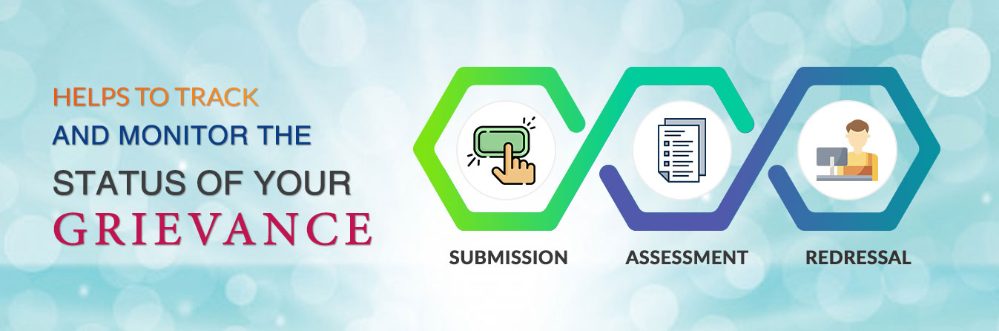
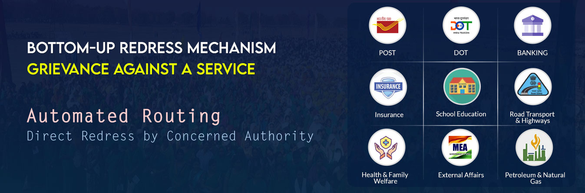
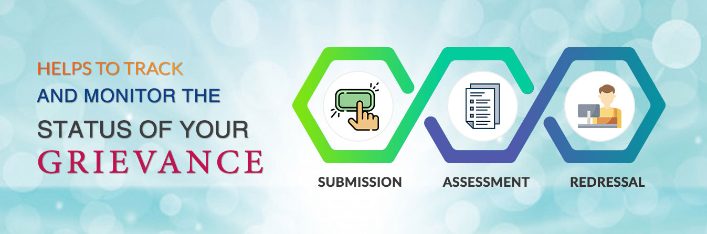
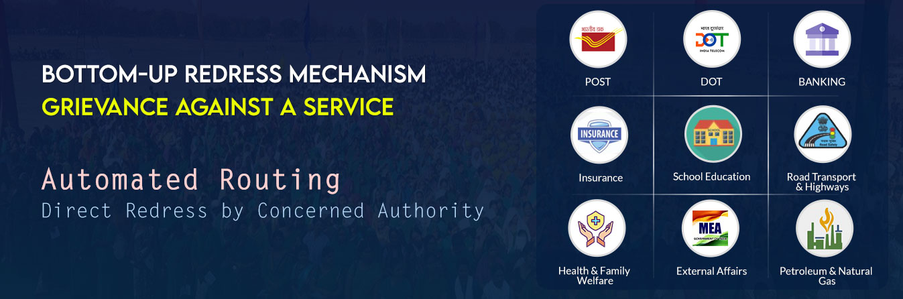
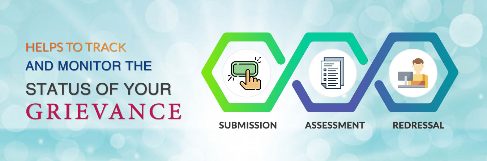
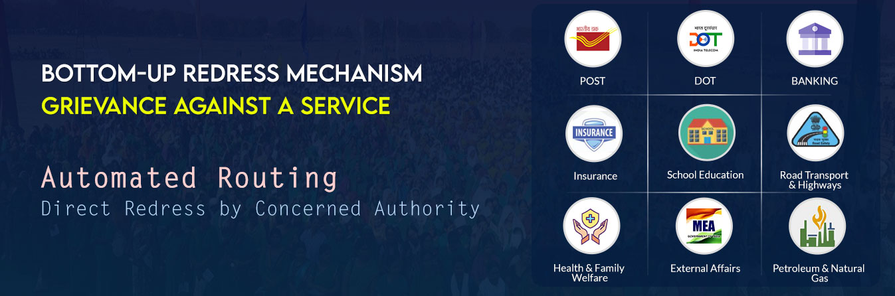
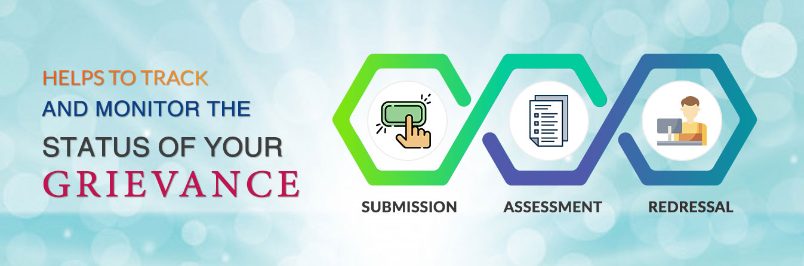

Grievance Redressal System (GRS) is an online platform available to the citizens 24x7 to lodge their grievances to the public authorities on any subject related to service delivery. It is a single portal connected to all the Ministries/Departments of Government of India and States. Every Ministry and States have role-based access to this system. GRS is also accessible to the citizens through standalone mobile application downloadable through Google Play store and mobile application integrated with UMANG.
The status of the grievance filed in GRS can be tracked with the unique registration ID provided at the time of registration of the complainant. GRS also provides appeal facility to the citizens if they are not satisfied with the resolution by the Grievance Officer. After closure of grievance if the complainant is not satisfied with the resolution, he/she can provide feedback. If the rating is "Poor" the option to file an appeal is enabled. The status of the Appeal can also be tracked by the petitioner with the grievance registration number.